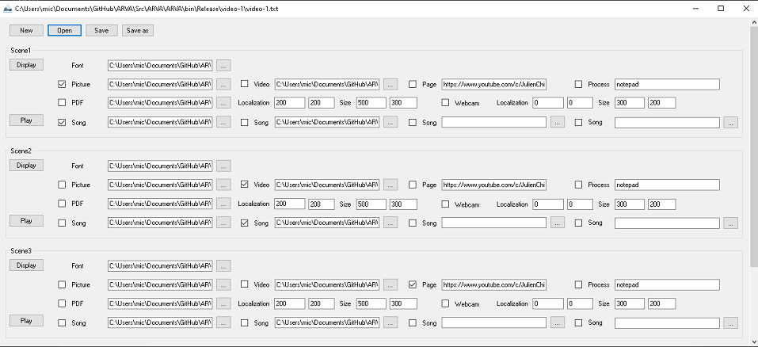

Build Your Scenes Fastly and Easy
The program is a simple tool to create scenes with contents ready to be captured for stream or upload on Youtube. Let's see...


Considerations About the Program
It's easy to understand and make scenes fastly. But I can give my supports like with my other programs. The keyboard key F5 is used to minimize/maximize the window of record. It ask to have 2 monitors, the first for the record, and the second for controlling what to display on the first. You can use GIF files for font and picture as well.